Bloopy is a gamified solution that aims to help working professionals create a boundary between work and personal time, engage intentionally in activities they enjoy, and grow connection through shared experiences.
Objective
To encourage positive behavioural change in distressed working professionals by introducing intentionality, a sense of connection, and identity beyond work.
Project Snapshot
Role
Product Designer
Timeline
3 Months
Team
Solo Project
Skills
Behavioral Design User Research Product Design
Can you recall?
When was the last time you switched off from work and did something you enjoy?
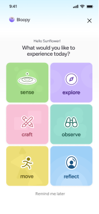
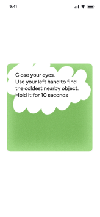
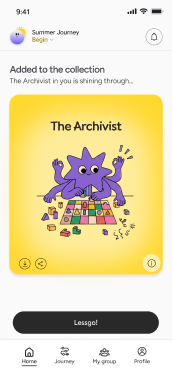
02 The Problem
When work ends, but the work mode doesn’t.
Thousands of working professionals come home with nothing but distress, burnout and fatigue. In search of rest, they reach for the nearest thing — a phone, a drink, an extra hour in bed, mimicking recovery but barely helping. In the long term leading to chronic exhaustion and quiet resignation.
59%
of Indian employees reported burnout symptoms in a survey by McKinsey Health Institute
Existing wellness solutions fail to bridge the gap between awareness and action.
Causes
Long working hours
Loneliness
Lack of recognition
Job insecurity
Poor management
Inability to disconnect
Unclear roles
Toxic workplace culture
Digital overload
Stigma around help-seeking
Work-life imbalance for women
03 Research
Secondary research
When does stress occur?
When attentional processing demand exceeds attentional processing capacity for a longer time.
Eustress (good stress)
Distress (bad stress)
Good stress can turn into bad stress when pressure exceeds the optimal zone.
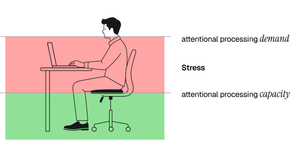
Directed attention, needed to focus on one task and ignore distractions, is finite and needs restoration.
Lack of restoration leads to decision paralysis, brain fog, and low-effort habits.
When directed attention goes over its capacity, the prefrontal cortex becomes ineffective, leading to loss of willpower.
People who need recovery are reluctant to it the most… Why? Loss of willpower.
Primary research
9 Interviews
4 Working from office
1 Working from home
4 Hybrid
Synthesized with affinity mapping
To understand →
The lifestyle of the user
Their existing ways for recovery
Motivation, beliefs and personal experiences
Daily user states and their influencers
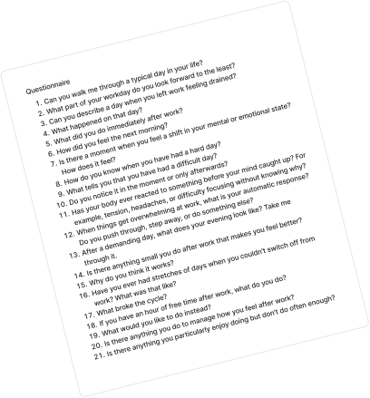
Research Findings
Work spillover: Stress carries into personal time, driving unhealthy coping habits.
Identity conflict: Exhaustion creates a gap between aspirational self and reality.
Productivity-based self-worth: Rest triggers guilt, self-doubt, and validation-seeking.
Low trust in change: Overwork reduces confidence in following through with new solutions.
Exhaustion leads to unconscious coping rather than intentional choices.
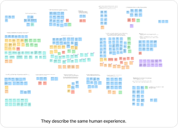
The focus was on recovery after work, where a huge pattern emerged.
04 Insights
The feedback loop
consequence→
Passive Recovery / Distraction
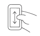
Doomscrolling
Substance consumption
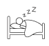
Excessive sleep
↑ Mimicking recovery
When these three failures happen at once, they create a feedback loop.
How might we help working professionals break the loop of passive recovery and reconnect with themselves?
Who did I design for
The Unmotivated Professional
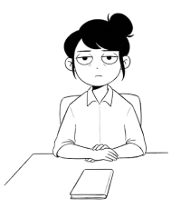
Annya, 31 · Senior Analyst, Mumbai
Has stopped planning personal activities after repeated failures, accepting scrolling as her default evening routine.
She needs a small, tangible success that rebuilds her belief in change.
Stopped personal interest activity
Scrolling is default
Low trust in change
Needs a low-effort start
The Motivated Professional
Aryan, 27 · Product Manager, Bangalore
Aspires to use his evenings meaningfully but lacks the energy after work, falling back on scrolling and feeling guilty.
He needs a recovery system designed for his exhausted self, not his motivated morning self.
High intent, low energy
Guilt after scrolling
Wants meaningful evenings
Needs structure, not willpower
05 Ideation
Design values
Recovery without shame
Intent of self-compassion
Well-being over productivity
How might we…
intervene in the transition moment, giving a psychological cue to exit?
nudge people who are reluctant to recover (facing the recovery paradox)?
design an intervention that is as low effort to start as scrolling and similar activities?
make the user feel it’s okay to rest and be themselves?
reintroduce a user to their personal interests and identity beyond work?
06 Intervention
Intervention framework
The basic framework of the intervention, based on research synthesis.
Work Identity
Psychological Detachment
Personal identity recovery (after workday)
Parallel recovery through social connection
Personal Identity
Intervention design
This intervention follows Susan Michie’s Behaviour Change Intervention Design Process.
The process followed:
Mapping out targeted behaviours with COM-B
Mapping different functions and techniques
Deriving the ideas around these functions
APEASE criteria for validation
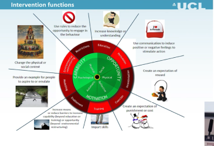
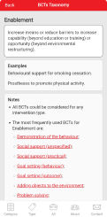
Targeted behaviours
Functions
Design ideas
Able to cross the threshold of work identity to personal identity
Personal identity activity without interference
Initiating any recovery behaviour
Goal setting
Action planning
Social support (emotional)
Self-monitoring of behaviour
Review behaviour goals
Feedback on behaviour
Prompting
Identity associated with the changed behaviour
Daily goals for individuals and groups
Weekly resets for the goals
Social presence when in personal identity zone
Daily check-ins (tick mark after the recovery)
Weekend reviews, decreasing mobile screen time
Haptics for the psychological detachment task
Individual scores within group
Nudging when the work is done
Choosing personal values & activities
Concept model
Individual path
Core mechanic
Social path
07 User journey
From work mode to personal fulfilment
One flexible journey for every energy level.
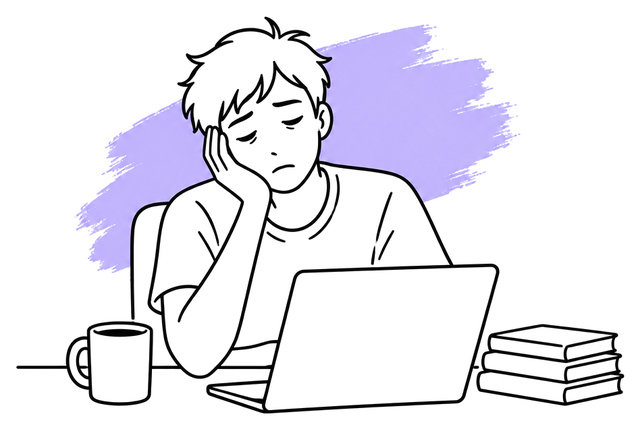
Workday ends
Drained, needs a reset.
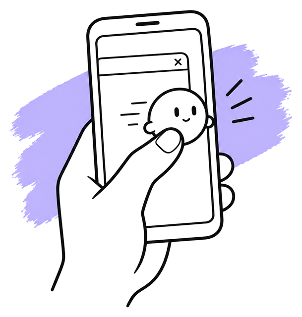
Detach
Swipe to close work.
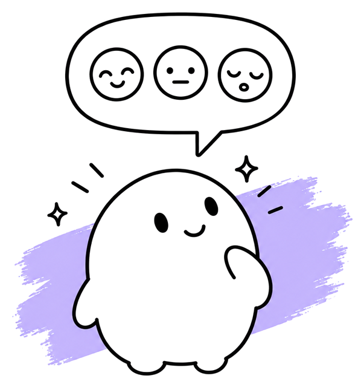
Check in
A quick mood check.
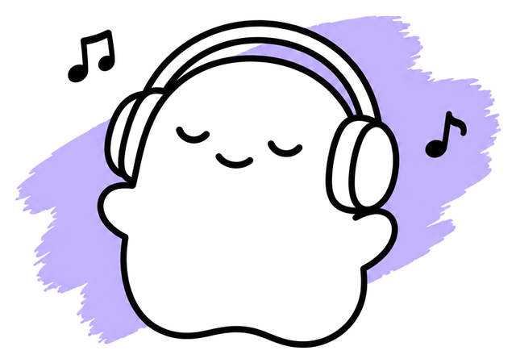
Low motivation
Autotelic experience
The experience is the reward.
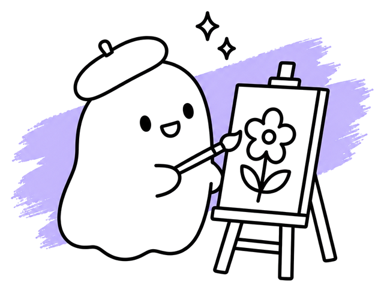
High motivation
Timed streak journey
Your own interest, lightly structured.
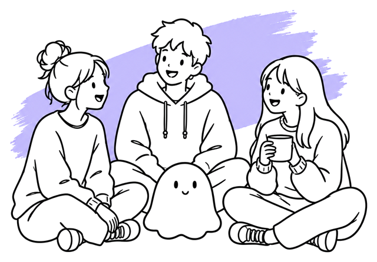
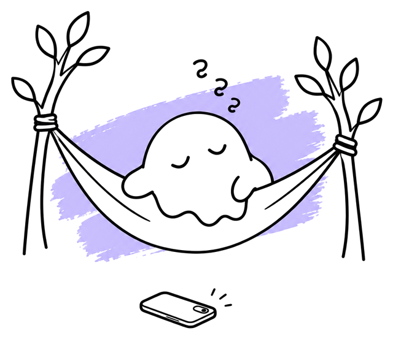
Connect
Be with your group, or rest.
Work to personal
Detach
Choose a path
Recover (your way)
Connect or rest
08 Key design decisions
01
Psychological Detachment
From an abstract loop → to a familiar gesture
Replaced the infinity-loop interaction with a swipe-to-close gesture, mimicking the real-life action of closing a window to create a clear sense of switching off from work.
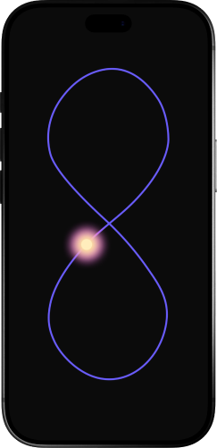
Before · infinity loop
BeforeTrace a glowing dot along an infinity loop. An abstract interaction to switch off from work.
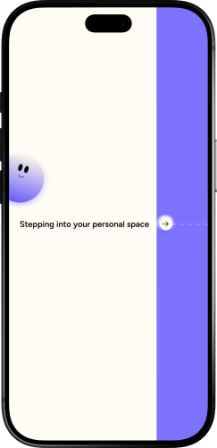
After · swipe to close
AfterSwipe to close, like closing a window. A familiar gesture that gives a clear sense of switching off from work.
02
Personal Recovery
From task completion → to intrinsic enjoyment
Replaced ambiguous, effortful tasks with autotelic prompts, where the experience itself is rewarding, making recovery easier to initiate without pressure.
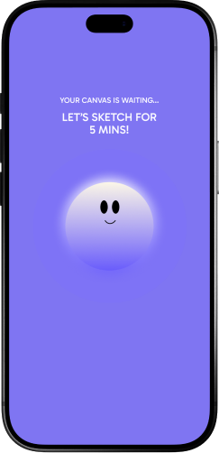
BeforeAn ambiguous task. “Let’s sketch for 5 mins!” still asked for effort and left the user unsure what to do.
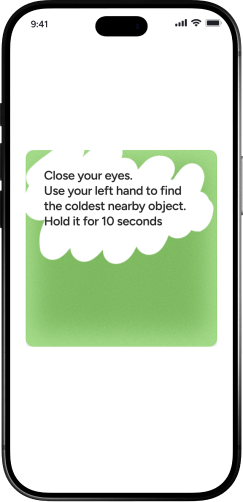
AfterAutotelic prompts, where the experience itself is the reward.
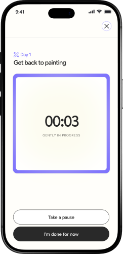
Gentle timerTake a pause or finish anytime, so recovery starts without pressure.
03
Social Connection
From codependency → to shared presence
Iterated collective challenges with simple participation visualisations, encouraging connection without obligation, comparison, or pressure to stay active.
Introduced a rest option for users who want to disconnect from screens, making rest as valid as participation.
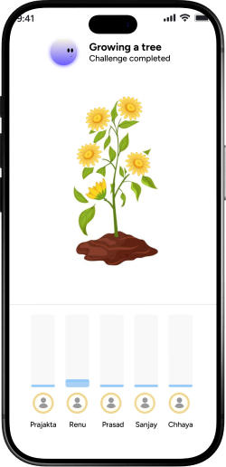
BeforeThe tree challenge added codependency instead of co-regulation: progress depended on everyone else.
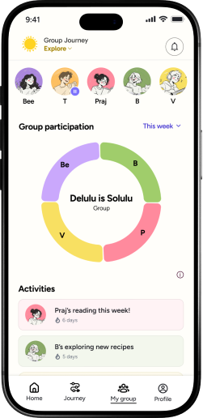
After · Shared presenceA simple participation ring: connection without obligation, comparison, or pressure to stay active.
09 The Solution
Screen flows
The app journey, flow by flow: from the moment work ends to recovering with your group.
Flow 01
Switching off from work
When the workday ends, Bloopy helps you mark the switch from work to you.
Work is done. Bloopy gently nudges you to take time for yourself.
A detachment ritual: trace the path to step out of work mode.
Feeling tense? The path becomes more intricate, with haptics that move from a tense to a calm rhythm.
Swipe to close the work window, like shutting a laptop.
Work is done. A moment for you. Your phone now goes into recovery mode, blocking work apps and notifications.
Flow 02
Recovering together
A home-screen widget shows who else in your circle is taking time for themselves.
Back on the home screen, the ‘Your circle’ widget appears.
Green dots show friends who are recovering right now. ‘Your circle is breathing.’
Flow 03
Find your spark
For when you don’t know what you feel like doing: small, playful prompts that are enjoyable in themselves.
‘Find My Spark’ is for when you want a little inspiration.
Pick how you’d like to spend the moment: sense, explore, craft, observe, move or reflect.
Scratch the card to reveal what’s waiting inside.
A small sensory prompt: close your eyes, find the coldest object nearby.
This moment is yours. Skip anything that doesn’t feel right.
Did this time feel like yours? Bloopy learns from your answer.
Keep a memory if you like: write, capture, record or doodle.
The experience is added to your journey.
Back home, ‘sense’ is ticked off.
Autotelic experience prompts: the activity itself is the reward. There are no points, badges or scores to chase.
Flow 04
Not today? That’s okay
Choosing rest counts too. No guilt, no lost progress.
Not in the mood? Choose to play later, or not today.
Taking rest is also part of ‘me time’.
Happy rest!
Flow 05
Complete all six
Each finished activity unlocks a piece of a puzzle that reveals who you are beyond work.
All six done. One step complete: let’s reveal your insight.
Each tile flips to reveal a piece of the picture…
…until the whole illustration comes together.
‘The Archivist’ joins your collection.
Begin stage completed. Bloopy reflects on what it noticed about you.
Your journey moves on to the next stage: Explore.
Flow 06
Know what you enjoy?
Motivated users pick their own activities and build gentle streaks.
What brings you here? Choose what feels closest.
‘My Own Activities’: make time for the things you love.
Great! You know what you enjoy.
Choose an activity, like getting back to painting, and start a streak.
Tap a card to log your day.
A gentle timer, with no pressure to keep going.
Done!
A quick check-in on how it felt.
Day 1 of your 6-day streak, complete.
Finish the streak and the days flip to reveal a picture…
‘The Painter’ joins your collection.
Yayy! Streak completed. On to the next stage.
Flow 07
A journey of seasons
No numbers or scores: progress moves through seasons, so experiences keep recurring.
Your journey begins in Summer.
Add memories along the way: words, photos, voice notes or doodles.
Each stage you complete moves you forward.
The path moves through Summer, Monsoon and Winter, with no streak counts or scores.
Flow 08
Shared presence
See your group’s participation, cheer each other on, or step away to rest.
Your group sees everyone’s participation. Challenge friends, or simply rest.
10 Impact
If Bloopy launched tomorrow, success would look like…
Not time spent in the app, but evenings that feel like your own.
Intentional recovery evenings
Evenings per week where a user detaches from work, then does an activity, connects, or chooses rest.
Detachment rate
Share of end-of-work nudges that lead to completing the swipe-to-close ritual.
Less passive scrolling
Drop in scrolling during the first hour after work, without total screen time going up.